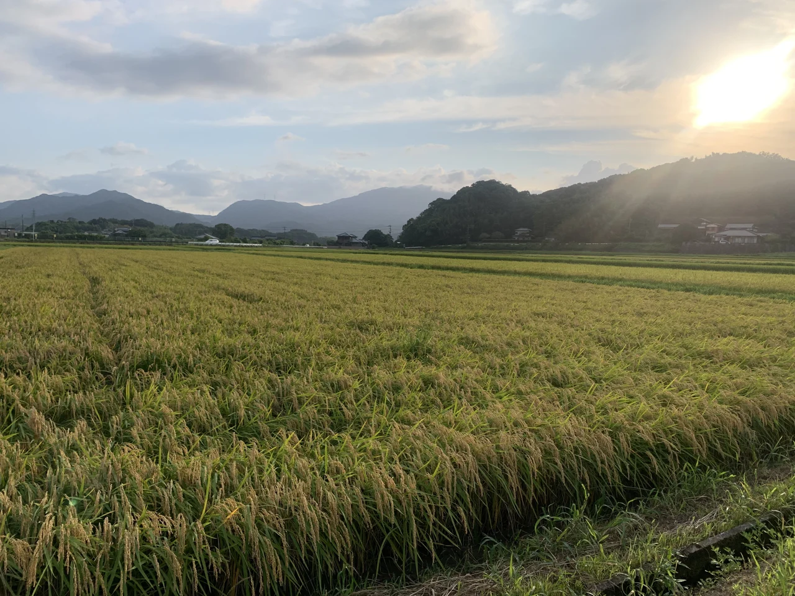

一
「ここにいていい」と
思える場所。

夕方の光が差す、青森の田んぼ。私は、5人きょうだいの真ん中で育ちました。
姉が二人、弟が二人。
田舎の、少し堅い家でした。
子どもの頃の私は、
家族の中に自分の居場所がないように感じていました。
忙しい母には、もっと関わってほしかった。
姉たちには、認めてもらいたかった。
でも、自分がほしいと思う形では返ってこない。
姉との関係もうまくいかなかったし、
弟たちは弟たちで仲がよかった。
そんな中で、
私をそのまま受け入れてくれたと感じていたのは、おばあちゃんでした。
家の中で「ここにいていい」と思える相手が、
私にとってはおばあちゃんだったんだと思います。
それでも、母や姉たちに認めてもらいたい気持ちはなくならなくて。
期待して、傷ついて、また期待して。
そのうち私は、
「別に私がいなくても、この家は困らない」
と思うようになりました。
期待すると悲しくなるから、
家族に期待することもやめていきました。
大学・大学院では、応用行動分析を学びました。
そして同じ学生時代、約5年半にわたって、
スナックと家電量販店の仕事を掛け持ちしていました。
大学では、人の行動をどう捉えるのかを学ぶ。
一方、バイト先に行けば、
教科書の中には収まらないような、本当にいろいろな人に出会う。
今振り返ると、この両方が私にとって、
「人を見る」時間
だったのだと思います。
スナックには、いろいろなお客さんが来ました。
ずっと自分の話をしている人。
豪快に笑って場を明るくする人。
ほとんど話さず、たまに口を開けば皮肉ばかりの人。
ママとしか話したくない人。
苦手だな、と思う人もいました。
それでも、
せっかく同じ時間を過ごすなら、
その人にも楽しんで帰ってほしい。
私も、その時間を一緒に楽しみたい。
そう思いながら働いていました。
そんなスナックで、
一人の後輩との関係に悩んだことがあります。
青森のことをからかわれたり、
私の知らない話題を持ち出してつっかかってこられたり。
私には、何かと攻撃されているように見えていました。
どう接したらいいのか分からなくなったとき、
ママが間に入ってくれて、三人で話をしました。
そこで、その子が言ったんです。
「仲良くなりたいんです」
本当にびっくりしました。
私には「近づかないで」と言われているように感じていた行動が、
相手の中では「近づきたい」だった。
人の言葉や行動は、
表から見えている意味だけでは分からない。
当時はしんどかったけれど、
今振り返ると、こういう出来事も含めて、
人と関わることは面白かったんだと思います。
四
この人には今、
何が必要なんだろう。
学問として人を見ることと、
目の前の生身の人を見ること。
家電量販店でも、
人を見る面白さを感じていました。
お客さんと話していると、
「この人は、たぶん今日決める」
「この人は、今日は買わないだろうな」
「だったら今は、値段とポイントと必要な情報をしっかり渡した方がいい」
そんな違いが、少しずつ見えるようになっていきました。
同じ商品を見に来ていても、
欲しい情報も、決める速さも、安心できる接し方も違う。
相手を自分のペースに乗せるのではなく、
この人には今、何が必要なんだろう。
と考えて接する。
そうしているうちに売上も伸び、
売り場の空気が明るくなるからと、
派遣会社を通して指名をいただくことも増えました。
でも、私にとって面白かったのは、
売れることそのもの以上に、
人によって、こんなにも違うんだ。
と知っていくことでした。
もっと人を知りたい。
なぜこの人は、こう考えるんだろう。
なぜ、同じ言葉でも届く人と届かない人がいるんだろう。
学生時代に学んでいた応用行動分析と、
バイト先で出会う一人ひとり。
学問として人を見ることと、
目の前の生身の人を見ること。
その両方が、私の中で少しずつ重なっていきました。
大学・大学院での学びの後は、子どもの発達支援や特別支援教育、
保護者への相談支援などに携わってきました。
スナックでのあの出来事から7〜8年ほど経って、
私はエニアグラムを学びました。
そこで昔の人間関係を振り返ったとき、
「あの人には、あの人なりの見え方があったのかもしれない」
と、当時には持てなかった視点で考えられることが増えました。
エニアグラムは、
過去の出来事の正解を教えてくれるものではありません。
でも、
自分とは違う人の内側を想像するための、新しい視点
をくれました。